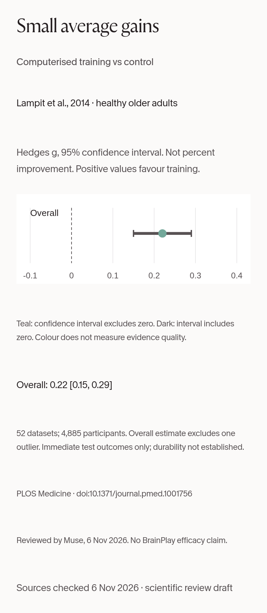
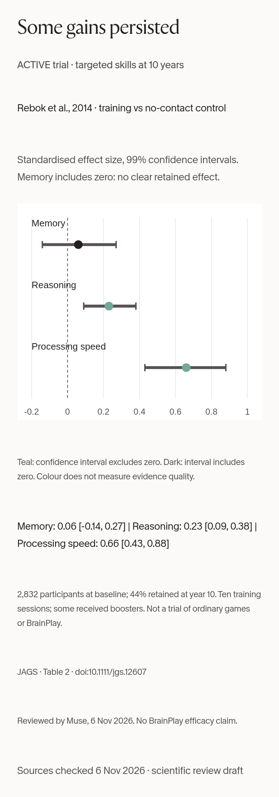
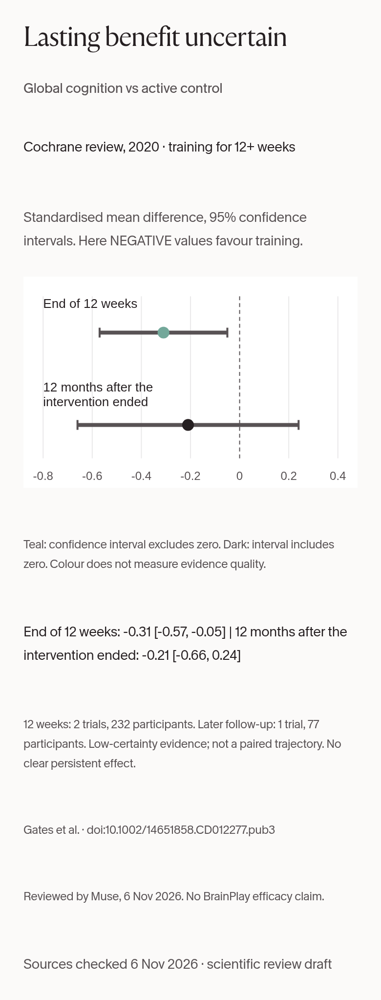

The research in charts
Tap or click a chart to open it full size. People often ask whether "brain games" work. Researchers have studied structured cognitive training for years, and the results are more mixed than headlines suggest. The three charts below redraw published numbers from three well-known studies, so you can see both the positive findings and the uncertain or null ones.
How to read these charts
- The numbers are standardised effect sizes, not percentage improvements. An effect of 0.22 does not mean "22% better". It is a statistical measure of how far apart the trained and comparison groups were.
- Each dot is the study's estimate. The line around it is a confidence interval: the range of values the data are compatible with. It describes uncertainty about the average, not the range of individual results.
- The dashed line marks zero, meaning no difference. When an interval crosses zero, that result does not show a clear difference.
- Colour is a statistical legend only: teal means the interval excludes zero, dark means it includes zero. Colour does not measure the quality of the evidence.
- The three charts measure different outcomes, at different times, with different methods. Do not compare values across charts.
1. Small average gains on thinking tests

A 2014 review in PLOS Medicine pooled 52 datasets from 51 articles, with 4,885 cognitively healthy older adults who did at least four hours of computerised training. On average, trained groups scored a little higher on thinking tests than comparison groups. [1]
- This overall estimate excludes one outlier study. These were immediate test results; the review does not establish that the gains lasted.
- The training programmes and comparison groups varied from study to study. Mean participant ages across studies ranged from 60 to 82.
- We did not chart the review's separate results for individual thinking skills, because the article's summary and main text give different values for at least one of them.
2. Some trained skills persisted at ten years

The ACTIVE trial randomly assigned 2,832 adults aged 65 and over to memory, reasoning or processing-speed training, or to a no-contact control group. Ten years later, the reasoning and speed groups still did better on the skills they had trained. The memory group did not. [2]
- Only 44% of the original participants were still in the study at ten years, which limits how far the results can be trusted.
- Training was ten initial sessions, with booster sessions for some participants. These were specific training programmes, not ordinary games, and not BrainPlay.
- This chart shows the tests of each trained skill. It does not show everyday-function outcomes.
3. Whether benefits last is uncertain

A 2020 Cochrane review looked at computerised training lasting at least 12 weeks in cognitively healthy older people, compared with an active control. At the end of training there was a small possible benefit for overall thinking ability (two studies, 232 participants). Twelve months after the training ended, only one study (77 participants) had data, and it did not show a clear lasting effect. [3]
- The evidence is rated low certainty, and the clinical importance of small immediate benefits is uncertain. No clear persistent effect was established.
- The two rows are separate estimates from different study groups, not the same people followed over time.
- The full review included eight trials and 1,183 participants; the charted results come from smaller subsets. It covers only training of 12 weeks or more, so it is not directly comparable with the 2014 review in chart 1.
The bottom line: Specific training programmes produced small improvements on thinking tests, and some trained skills held up for years, but memory gains and long-term benefits remain unclear. None of this was tested on BrainPlay. Play because you enjoy it, and see What can brain games really do? for more context. [1-3]
Sources
- Lampit A, Hallock H, Valenzuela M. Computerized Cognitive Training in Cognitively Healthy Older Adults: A Systematic Review and Meta-Analysis of Effect Modifiers. PLOS Medicine, 2014. doi:10.1371/journal.pmed.1001756. Results, Overall Efficacy, and Figure 2. https://journals.plos.org/plosmedicine/article?id=10.1371%2Fjournal.pmed.1001756
- Rebok GW et al. Ten-Year Effects of the Advanced Cognitive Training for Independent and Vital Elderly Cognitive Training Trial on Cognition and Everyday Functioning in Older Adults. Journal of the American Geriatrics Society, 2014. doi:10.1111/jgs.12607. Table 2. https://pmc.ncbi.nlm.nih.gov/articles/PMC4055506/
- Gates NJ et al. Computerised cognitive training for 12 or more weeks for maintaining cognitive function in cognitively healthy people in late life. Cochrane Database of Systematic Reviews, 2020. doi:10.1002/14651858.CD012277.pub3. Main results, active-control comparison, global cognitive function. https://www.cochrane.org/evidence/CD012277_computerised-cognitive-training-maintaining-cognitive-function-cognitively-healthy-people-late-life
The charts redraw the published numbers with attribution; no figures were copied from the papers. They were checked value by value against these sources on 6 November 2026. They are research illustrations, not medical advice.
← Back to the games · All articles · About · Privacy policy · Photo credits · Cookie settings